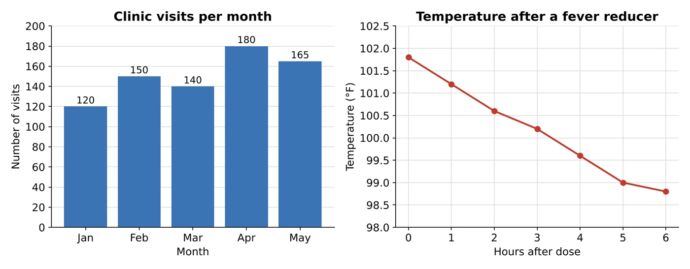

Reading Tables, Charts and Graphs
TEAS objective M.2.1 · Measurement and Data
What the TEAS expects: you can pull the right numbers from a table, bar graph, line graph or pie chart and use them to answer a question.
Calculator: the TEAS gives you a basic on-screen calculator. Use it for differences, totals and percents read off the graph.
1. Read before you calculate
- Title: what is being shown?
- Axis labels and units: what does each axis measure, and in what units?
- Scale: how much is each grid line worth (1, 5, 20…)?
- Key or legend: what do colors or symbols mean?
- Then find the values the question asks for.
2. Common graph types
| Graph | Best for | Read it by |
|---|---|---|
| Table | Exact values | Find the row and column |
| Bar graph | Comparing categories | Bar height against the axis |
| Line graph | Change over time | Slope: steep = fast change; flat = no change |
| Pie chart | Parts of a whole | Each slice is a percent of 100% |
| Pictograph | Counts with symbols | Check the key: one symbol may equal 10 items |

Tap or click the figure to open it full size.
Using the bar graph:
- Most visits: April (180). Fewest: January (120).
- Change from January to February: 150 − 120 = +30.
- Total for January–March: 120 + 150 + 140 = 410.
- Largest increase between consecutive months: March to April, +40.
Using the line graph:
- Temperature at 3 hours: 100.2 °F.
- Total drop over 6 hours: 101.8 − 98.8 = 3.0 °F.
- The line flattens between hours 5 and 6, so the drop slowed down.
Check 1: In the bar graph, by what percent did visits increase from January to April? Answer at the bottom of the page.
3. Pie charts
Slices are percents that add to 100%. To find an amount: percent × total.
Example: a $2,400 monthly budget is shown as rent 40%, food 15%, car 20%, other 25%. Rent = 0.40 × 2,400 = $960.
Check 2: In that budget, how much more goes to the car than to food? Answer at the bottom of the page.
Common traps
- Misreading the scale. If grid lines go by 20, a bar halfway between 140 and 160 is 150.
- Using the wrong row or column in a table. Run your finger along both.
- Confusing "change" with "value." The question may ask how much something increased, not its final value.
- Bringing in outside knowledge. Answer only from the data shown.
Learn it properly
- Bar graphs and line graphs: OpenStax Introductory Statistics 2e, Section 2.1 Stem-and-Leaf Graphs (Stemplots), Line Graphs, and Bar Graphs: OpenStax (opens in a new tab)
Check answers
- 50%. (180 − 120) ÷ 120 = 60 ÷ 120 = 0.50.
- $120. Car 0.20 × 2,400 = $480; food 0.15 × 2,400 = $360; $480 − $360 = $120.
ESCC TEAS Prep · Original study material written for Eastern Shore Community College. Linked textbook: OpenStax, Introductory Statistics 2e.